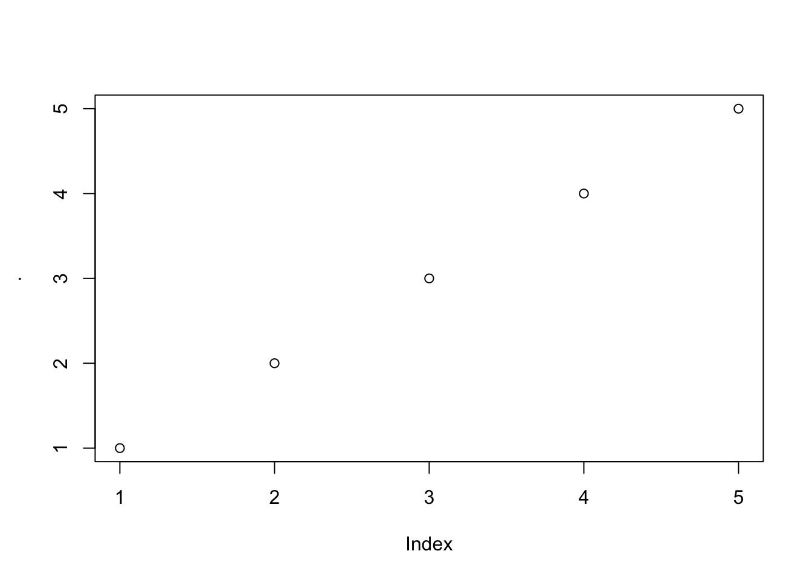
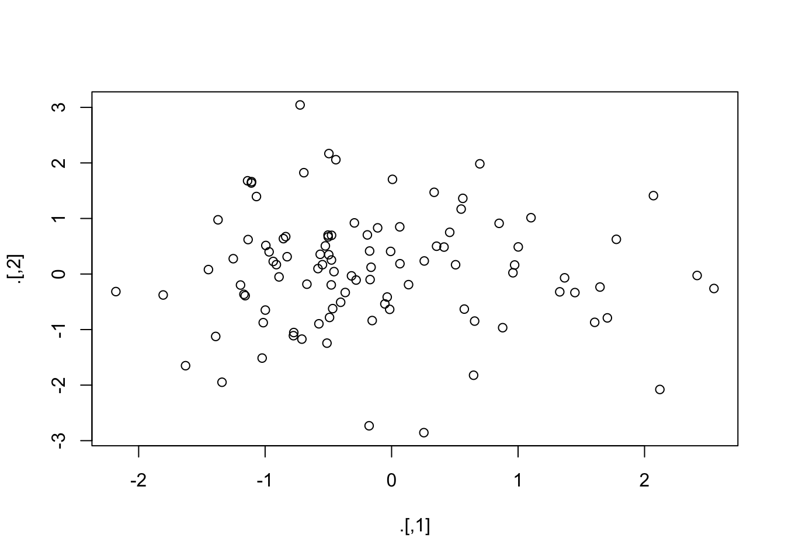

# A tibble: 336,776 × 19
year month day dep_time sched_dep_time dep_delay arr_time sched_arr_time
<int> <int> <int> <int> <int> <dbl> <int> <int>
1 2013 1 1 517 515 2 830 819
2 2013 1 1 533 529 4 850 830
3 2013 1 1 542 540 2 923 850
4 2013 1 1 544 545 -1 1004 1022
5 2013 1 1 554 600 -6 812 837
6 2013 1 1 554 558 -4 740 728
7 2013 1 1 555 600 -5 913 854
8 2013 1 1 557 600 -3 709 723
9 2013 1 1 557 600 -3 838 846
10 2013 1 1 558 600 -2 753 745
# ℹ 336,766 more rows
# ℹ 11 more variables: arr_delay <dbl>, carrier <chr>, flight <int>,
# tailnum <chr>, origin <chr>, dest <chr>, air_time <dbl>, distance <dbl>,
# hour <dbl>, minute <dbl>, time_hour <dttm>基于dplyr包的数据处理
参考：
Data transformation chapter in R for Data Science

1 介绍
dplyr包是tidyverse的核心包之一，为数据处理提供了一系列方便快捷的函数。本章将以nycflights13包中的flights案例数据来介绍基于dplyr包的数据处理语法。该数据集包含 2013 年从纽约市起飞的所有 336,776 次航班的信息。
这里的flights数据是一个 tibble，这是一种升级版的data.frame，被 tidyverse 用来避免一些data.frame的常见问题。Tibbles 和data.frame之间的一个重要的区别在于 tibbles 打印数据的方式：tibbles 是为大型数据集设计的，因此只显示前几行和适应屏幕宽度的列（如上）。可以使用 print(flights, width = Inf) 显示所有列，或者使用 glimpse()：
glimpse(flights)Rows: 336,776
Columns: 19
$ year <int> 2013, 2013, 2013, 2013, 2013, 2013, 2013, 2013, 2013, 2…
$ month <int> 1, 1, 1, 1, 1, 1, 1, 1, 1, 1, 1, 1, 1, 1, 1, 1, 1, 1, 1…
$ day <int> 1, 1, 1, 1, 1, 1, 1, 1, 1, 1, 1, 1, 1, 1, 1, 1, 1, 1, 1…
$ dep_time <int> 517, 533, 542, 544, 554, 554, 555, 557, 557, 558, 558, …
$ sched_dep_time <int> 515, 529, 540, 545, 600, 558, 600, 600, 600, 600, 600, …
$ dep_delay <dbl> 2, 4, 2, -1, -6, -4, -5, -3, -3, -2, -2, -2, -2, -2, -1…
$ arr_time <int> 830, 850, 923, 1004, 812, 740, 913, 709, 838, 753, 849,…
$ sched_arr_time <int> 819, 830, 850, 1022, 837, 728, 854, 723, 846, 745, 851,…
$ arr_delay <dbl> 11, 20, 33, -18, -25, 12, 19, -14, -8, 8, -2, -3, 7, -1…
$ carrier <chr> "UA", "UA", "AA", "B6", "DL", "UA", "B6", "EV", "B6", "…
$ flight <int> 1545, 1714, 1141, 725, 461, 1696, 507, 5708, 79, 301, 4…
$ tailnum <chr> "N14228", "N24211", "N619AA", "N804JB", "N668DN", "N394…
$ origin <chr> "EWR", "LGA", "JFK", "JFK", "LGA", "EWR", "EWR", "LGA",…
$ dest <chr> "IAH", "IAH", "MIA", "BQN", "ATL", "ORD", "FLL", "IAD",…
$ air_time <dbl> 227, 227, 160, 183, 116, 150, 158, 53, 140, 138, 149, 1…
$ distance <dbl> 1400, 1416, 1089, 1576, 762, 719, 1065, 229, 944, 733, …
$ hour <dbl> 5, 5, 5, 5, 6, 5, 6, 6, 6, 6, 6, 6, 6, 6, 6, 5, 6, 6, 6…
$ minute <dbl> 15, 29, 40, 45, 0, 58, 0, 0, 0, 0, 0, 0, 0, 0, 0, 59, 0…
$ time_hour <dttm> 2013-01-01 05:00:00, 2013-01-01 05:00:00, 2013-01-01 0…在这两种视图中，变量名下方或后面都有相应的缩写，代表每个变量的类型：<int> 代表整数型数据，tibble包的官方文档。

dplyr语法的共同特点：
第一个参数始终是数据集（tibble或data.frame）的名字。
后面的参数通常使用变量名（不带引号）来描述要对哪些列进行操作。
输出总是一个新的tibble或data.frame。
dplyr 的函数可以根据它们的操作对象分为四类：分别是对行进行操作的函数、对列进行操作的函数、对表进行操作的函数以及分组统计函数，同时还包括一个特殊的管道符号%>%。本章将介绍除对表进行操作之外的函数。
2 管道操作符
R中有两种管道操作符（pipe operator)，分别是R自带的来自base包的|>，和来自magrittr包（上级包是dplyr和tidyverse）的%>%。我们可以将管道操作符理解为车间里的流水线，经过前一步加工的产品才能进入后一步进一步加工，其作用是将上一步的结果直接传参给下一步的函数，从而省略了中间的赋值步骤，可以大量减少中间变量，节省内存。例如：
如果x, y并不会被后面的代码用到的话，那么减少这种中间变量的产生是有利于代码的整洁和降低变量冲突的风险的。
如果不使用管道操作，同时要避免产生中间变量的话就需要嵌套代码，而管道操作则通过一种链式调用的方式去写嵌套调用的代码，使代码更清晰和易于理解。比如：
很明显管道的调用逻辑要比嵌套调用更加清晰而符合直觉。
Tip
来自
magrittr包的管道符%>%和base包的|>存在一些语法上的区别，%>%的功能更多（见下文）。在一般使用时，如果不需要
%>%的高级功能，建议直接用从2021年的R 4.1.0开始原生支持的|>作为默认管道符。如果需要用到高级功能，或习惯tidyverse包的数据处理语法，则再考虑使用%>%。-
RStudio目前通过快捷键
Command+Shift+M默认插入的是%>%符号，可以通过在设置中勾选如下选项来让该快捷键默认插入|>。
2.1 管道的基本用法
管道的用法就是通过管道符|>或%>%串联起来前后的两个函数调用，先计算管道符号左边的函数调用，然后将其结果自动传递给管道符号右边函数的第一个参数（默认），然后对运行这个函数，正如上面的例子中提到的一样。如果不想把值传递给第一个参数，则可以用占位符_（适用于|>）或.（适用于%>%）的形式指定把前面的运算结果传递给哪个参数。
比如想在mtcars数据集的车名中寻找所有以“M”开头的车名，则可以通过如下方式寻找：
[1] 1 2 8 9 10 11 12 13 14 31#或用%>%形式
library(magrittr) # 也可以直接加载dplyr或tidyverse包，便于后续调用其他tidyverse函数
mtcars %>% rownames() %>% grep(pattern = "^M", x = .) [1] 1 2 8 9 10 11 12 13 14 31解释如下：在grep函数那里，由于我们想在车名（这里是行名）中找到符合特定pattern的车名位置，因此需要把车名传给grep的第二个参数x，所以就可以.或_的形式将前面的值传给grep的x。
⚠️注意：传给其他位置的.必须是独立的，不能在一个表达式（函数）中，比如如下情况，我只想寻找前10个车名中以“M”开头的车名位置：
Warning in grep(., "^M", x = .[1:10]): argument 'pattern' has length > 1 and
only the first element will be used[1] 1 2[1] 1 2 8 9 10上面的错误调用中，传递给grep的x参数的是一个表达式.[1:10]，不是一个单独的.了，因此失去了调整前面值的位置的作用，它就等价于如下调用：
2.2 管道的进阶用法
我们可以通过“{}”符号包裹后续函数，在“{}”内的代码，可以任意的使用多个占位符.去传递管道前的值。还是上面的例子：
⚠️注意，|>不支持“{}”形式：
# 错误：
mtcars |> rownames() |> {grep("^M", x = _[1:10])}这也反映出base包|>功能的局限性。
本质上“{}”是magrittr改写的一个匿名函数，只有唯一的一个参数，也就是. ：
function(.) {
# any code
}比如想要获取mtcars的前5行前5列，然后更改行名和列名后，再返回这个数据框：
df <- mtcars %>% .[1:5, 1:5] %>%
{
rownames(.) <- paste0("row", 1:5)
colnames(.) <- paste0("col", 1:5)
. # <---------- 不要忘了返回这个数据框
}
df col1 col2 col3 col4 col5
row1 21.0 6 160 110 3.90
row2 21.0 6 160 110 3.90
row3 22.8 4 108 93 3.85
row4 21.4 6 258 110 3.08
row5 18.7 8 360 175 3.15⚠️注意，在整个“{}”包括的语句中，如果再使用管道要注意这时的占位符.代表的是“{}”内的对象。
mtcars %>% .[1:5, 1:5] %>%
{
rownames(.) <- paste0("row", 1:5)
colnames(.) <- paste0("col", 1:5)
.[1:3, ] %>% cbind(., .) # cbind里面的.不指代{}外面的值
} col1 col2 col3 col4 col5 col1 col2 col3 col4 col5
row1 21.0 6 160 110 3.90 21.0 6 160 110 3.90
row2 21.0 6 160 110 3.90 21.0 6 160 110 3.90
row3 22.8 4 108 93 3.85 22.8 4 108 93 3.85# 等价：
mtcars %>% .[1:5, 1:5] %>%
{
rownames(.) <- paste0("row", 1:5)
colnames(.) <- paste0("col", 1:5)
.
} %>%
.[1:3, ] %>%
cbind(., .) col1 col2 col3 col4 col5 col1 col2 col3 col4 col5
row1 21.0 6 160 110 3.90 21.0 6 160 110 3.90
row2 21.0 6 160 110 3.90 21.0 6 160 110 3.90
row3 22.8 4 108 93 3.85 22.8 4 108 93 3.852.3 特殊管道符
magrittr包内除了%>%管道符外，还提供了%$%、%<>%、%T>%、%!>%，他们的作用简述如下：
%$%
用于传递管道左侧数据的names：

%<>%
将管道的结果最终再赋值回最左侧的变量：
[1] -1.2070657 0.2774292 1.0844412 -2.3456977 0.4291247[1] 7.654302 8.792934 10.277429 10.429125 11.084441%T>%
分支管道，传入左侧的值并运算后将原始值而不是运算结果传递给后续管道。这在多个管道中间使用print()、plot()或summary()这些函数返回信息时非常有用。
[1] 0
[1] 15# 另一个例子
rnorm(200) %>%
matrix(ncol = 2) %T>%
plot %>%
colSums() # 传递给colSums()的是“rnorm(200) %>% matrix(ncol = 2)”
[1] -15.23708 7.826923 对行的操作
3.1 filter()

用于提取满足某（些）条件的行，基本等同于subset()。
# 查找所有晚点 120 分钟（两小时）以上起飞的航班：
filter(flights, dep_delay > 120)# A tibble: 9,723 × 19
year month day dep_time sched_dep_time dep_delay arr_time sched_arr_time
<int> <int> <int> <int> <int> <dbl> <int> <int>
1 2013 1 1 848 1835 853 1001 1950
2 2013 1 1 957 733 144 1056 853
3 2013 1 1 1114 900 134 1447 1222
4 2013 1 1 1540 1338 122 2020 1825
5 2013 1 1 1815 1325 290 2120 1542
6 2013 1 1 1842 1422 260 1958 1535
7 2013 1 1 1856 1645 131 2212 2005
8 2013 1 1 1934 1725 129 2126 1855
9 2013 1 1 1938 1703 155 2109 1823
10 2013 1 1 1942 1705 157 2124 1830
# ℹ 9,713 more rows
# ℹ 11 more variables: arr_delay <dbl>, carrier <chr>, flight <int>,
# tailnum <chr>, origin <chr>, dest <chr>, air_time <dbl>, distance <dbl>,
# hour <dbl>, minute <dbl>, time_hour <dttm># A tibble: 51,955 × 19
year month day dep_time sched_dep_time dep_delay arr_time sched_arr_time
<int> <int> <int> <int> <int> <dbl> <int> <int>
1 2013 1 1 517 515 2 830 819
2 2013 1 1 533 529 4 850 830
3 2013 1 1 542 540 2 923 850
4 2013 1 1 544 545 -1 1004 1022
5 2013 1 1 554 600 -6 812 837
6 2013 1 1 554 558 -4 740 728
7 2013 1 1 555 600 -5 913 854
8 2013 1 1 557 600 -3 709 723
9 2013 1 1 557 600 -3 838 846
10 2013 1 1 558 600 -2 753 745
# ℹ 51,945 more rows
# ℹ 11 more variables: arr_delay <dbl>, carrier <chr>, flight <int>,
# tailnum <chr>, origin <chr>, dest <chr>, air_time <dbl>, distance <dbl>,
# hour <dbl>, minute <dbl>, time_hour <dttm>
3.2 arrange()
排序，以某列为依据对行进行排序（在前面的数据处理基本函数一章中已涉及该函数）。对应的功能在base包中是order()函数。如果提供的列名不止一个，则依次根据提供的列的顺序对数据进行排序。例如，下面的代码按航班出发时间排序，出发时间分布在四列中。我们首先得到最早的年份，然后在一年内得到最早的月份，依此类推。
arrange(flights, year, month, day, dep_time)# A tibble: 336,776 × 19
year month day dep_time sched_dep_time dep_delay arr_time sched_arr_time
<int> <int> <int> <int> <int> <dbl> <int> <int>
1 2013 1 1 517 515 2 830 819
2 2013 1 1 533 529 4 850 830
3 2013 1 1 542 540 2 923 850
4 2013 1 1 544 545 -1 1004 1022
5 2013 1 1 554 600 -6 812 837
6 2013 1 1 554 558 -4 740 728
7 2013 1 1 555 600 -5 913 854
8 2013 1 1 557 600 -3 709 723
9 2013 1 1 557 600 -3 838 846
10 2013 1 1 558 600 -2 753 745
# ℹ 336,766 more rows
# ℹ 11 more variables: arr_delay <dbl>, carrier <chr>, flight <int>,
# tailnum <chr>, origin <chr>, dest <chr>, air_time <dbl>, distance <dbl>,
# hour <dbl>, minute <dbl>, time_hour <dttm>可以加上desc()实现降序排列：
# A tibble: 336,776 × 19
year month day dep_time sched_dep_time dep_delay arr_time sched_arr_time
<int> <int> <int> <int> <int> <dbl> <int> <int>
1 2013 1 9 641 900 1301 1242 1530
2 2013 6 15 1432 1935 1137 1607 2120
3 2013 1 10 1121 1635 1126 1239 1810
4 2013 9 20 1139 1845 1014 1457 2210
5 2013 7 22 845 1600 1005 1044 1815
6 2013 4 10 1100 1900 960 1342 2211
7 2013 3 17 2321 810 911 135 1020
8 2013 6 27 959 1900 899 1236 2226
9 2013 7 22 2257 759 898 121 1026
10 2013 12 5 756 1700 896 1058 2020
# ℹ 336,766 more rows
# ℹ 11 more variables: arr_delay <dbl>, carrier <chr>, flight <int>,
# tailnum <chr>, origin <chr>, dest <chr>, air_time <dbl>, distance <dbl>,
# hour <dbl>, minute <dbl>, time_hour <dttm>
3.3 distinct()

查找数据集中所有唯一的行。
# 移除所有完全相同的行
distinct(flights)# A tibble: 336,776 × 19
year month day dep_time sched_dep_time dep_delay arr_time sched_arr_time
<int> <int> <int> <int> <int> <dbl> <int> <int>
1 2013 1 1 517 515 2 830 819
2 2013 1 1 533 529 4 850 830
3 2013 1 1 542 540 2 923 850
4 2013 1 1 544 545 -1 1004 1022
5 2013 1 1 554 600 -6 812 837
6 2013 1 1 554 558 -4 740 728
7 2013 1 1 555 600 -5 913 854
8 2013 1 1 557 600 -3 709 723
9 2013 1 1 557 600 -3 838 846
10 2013 1 1 558 600 -2 753 745
# ℹ 336,766 more rows
# ℹ 11 more variables: arr_delay <dbl>, carrier <chr>, flight <int>,
# tailnum <chr>, origin <chr>, dest <chr>, air_time <dbl>, distance <dbl>,
# hour <dbl>, minute <dbl>, time_hour <dttm># 查找所有唯一的出发地和目的地配对
distinct(flights, origin, dest)# A tibble: 224 × 2
origin dest
<chr> <chr>
1 EWR IAH
2 LGA IAH
3 JFK MIA
4 JFK BQN
5 LGA ATL
6 EWR ORD
7 EWR FLL
8 LGA IAD
9 JFK MCO
10 LGA ORD
# ℹ 214 more rows可以看到，如果根据某列或某几列为依据来查找非重复值，那么默认只输出这几列，我们可以通过加入.keep_all = TRUE参数来保留其他列。.表示 .keep_all 是函数的一个参数，而不另一个变量的名称。
distinct(flights, origin, dest, .keep_all = TRUE)# A tibble: 224 × 19
year month day dep_time sched_dep_time dep_delay arr_time sched_arr_time
<int> <int> <int> <int> <int> <dbl> <int> <int>
1 2013 1 1 517 515 2 830 819
2 2013 1 1 533 529 4 850 830
3 2013 1 1 542 540 2 923 850
4 2013 1 1 544 545 -1 1004 1022
5 2013 1 1 554 600 -6 812 837
6 2013 1 1 554 558 -4 740 728
7 2013 1 1 555 600 -5 913 854
8 2013 1 1 557 600 -3 709 723
9 2013 1 1 557 600 -3 838 846
10 2013 1 1 558 600 -2 753 745
# ℹ 214 more rows
# ℹ 11 more variables: arr_delay <dbl>, carrier <chr>, flight <int>,
# tailnum <chr>, origin <chr>, dest <chr>, air_time <dbl>, distance <dbl>,
# hour <dbl>, minute <dbl>, time_hour <dttm>可以发现所有这些不同的航班都是在 1 月 1 日，这绝非巧合：distinct() 会在数据集中找到唯一值第一次出现的那一行，并舍弃其他行。
如果要得到每种出发地和目的地配对出现的次数，可以将 distinct() 换成 count()，并可使用 sort = TRUE 参数按出现次数降序排列。count()同样来自dplyr包，用于快速统计一个或多个变量的唯一值的出现次数。
count(flights, origin, dest, sort = TRUE)# A tibble: 224 × 3
origin dest n
<chr> <chr> <int>
1 JFK LAX 11262
2 LGA ATL 10263
3 LGA ORD 8857
4 JFK SFO 8204
5 LGA CLT 6168
6 EWR ORD 6100
7 JFK BOS 5898
8 LGA MIA 5781
9 JFK MCO 5464
10 EWR BOS 5327
# ℹ 214 more rows4 对列的操作
4.1 mutate()

mutate()的作用是根据现有列计算并添加新列。
# 计算延误航班在空中停留的时间（gain）以及平均速度（speed，英里/小时）：
mutate(
flights,
gain = dep_delay - arr_delay,
speed = distance / air_time * 60
)# A tibble: 336,776 × 21
year month day dep_time sched_dep_time dep_delay arr_time sched_arr_time
<int> <int> <int> <int> <int> <dbl> <int> <int>
1 2013 1 1 517 515 2 830 819
2 2013 1 1 533 529 4 850 830
3 2013 1 1 542 540 2 923 850
4 2013 1 1 544 545 -1 1004 1022
5 2013 1 1 554 600 -6 812 837
6 2013 1 1 554 558 -4 740 728
7 2013 1 1 555 600 -5 913 854
8 2013 1 1 557 600 -3 709 723
9 2013 1 1 557 600 -3 838 846
10 2013 1 1 558 600 -2 753 745
# ℹ 336,766 more rows
# ℹ 13 more variables: arr_delay <dbl>, carrier <chr>, flight <int>,
# tailnum <chr>, origin <chr>, dest <chr>, air_time <dbl>, distance <dbl>,
# hour <dbl>, minute <dbl>, time_hour <dttm>, gain <dbl>, speed <dbl>默认情况下，mutate() 会在数据集的最右侧添加计算后的新列，因此很难看到这里发生了什么。我们可以使用 .before 参数将变量添加到数据集的左侧：
mutate(
flights,
gain = dep_delay - arr_delay,
speed = distance / air_time * 60,
.before = 1 # 添加到第一列
)# A tibble: 336,776 × 21
gain speed year month day dep_time sched_dep_time dep_delay arr_time
<dbl> <dbl> <int> <int> <int> <int> <int> <dbl> <int>
1 -9 370. 2013 1 1 517 515 2 830
2 -16 374. 2013 1 1 533 529 4 850
3 -31 408. 2013 1 1 542 540 2 923
4 17 517. 2013 1 1 544 545 -1 1004
5 19 394. 2013 1 1 554 600 -6 812
6 -16 288. 2013 1 1 554 558 -4 740
7 -24 404. 2013 1 1 555 600 -5 913
8 11 259. 2013 1 1 557 600 -3 709
9 5 405. 2013 1 1 557 600 -3 838
10 -10 319. 2013 1 1 558 600 -2 753
# ℹ 336,766 more rows
# ℹ 12 more variables: sched_arr_time <int>, arr_delay <dbl>, carrier <chr>,
# flight <int>, tailnum <chr>, origin <chr>, dest <chr>, air_time <dbl>,
# distance <dbl>, hour <dbl>, minute <dbl>, time_hour <dttm>也可以使用 .after 指定新变量应该在哪个变量后添加，在 .before 和 .after 中，都可以使用变量名和列数两种方法指定新变量出现的位置。例如，我们可以在 “day” 之后添加新变量：
mutate(
flights,
gain = dep_delay - arr_delay,
speed = distance / air_time * 60,
.after = day # 添加到第一列
)# A tibble: 336,776 × 21
year month day gain speed dep_time sched_dep_time dep_delay arr_time
<int> <int> <int> <dbl> <dbl> <int> <int> <dbl> <int>
1 2013 1 1 -9 370. 517 515 2 830
2 2013 1 1 -16 374. 533 529 4 850
3 2013 1 1 -31 408. 542 540 2 923
4 2013 1 1 17 517. 544 545 -1 1004
5 2013 1 1 19 394. 554 600 -6 812
6 2013 1 1 -16 288. 554 558 -4 740
7 2013 1 1 -24 404. 555 600 -5 913
8 2013 1 1 11 259. 557 600 -3 709
9 2013 1 1 5 405. 557 600 -3 838
10 2013 1 1 -10 319. 558 600 -2 753
# ℹ 336,766 more rows
# ℹ 12 more variables: sched_arr_time <int>, arr_delay <dbl>, carrier <chr>,
# flight <int>, tailnum <chr>, origin <chr>, dest <chr>, air_time <dbl>,
# distance <dbl>, hour <dbl>, minute <dbl>, time_hour <dttm>另外，也可以使用 .keep 参数来控制在计算新变量后哪些变量会被保留:
.keep = "all"：默认。保留所有变量.keep = "used"：保留用于计算新变量的旧变量。这可以用于检查我们的新变量是否计算正确，因为它和原始变量一起展示。.keep = "unused"：保留其他不用于计算新变量的旧变量。
例如，下面的输出将只包含旧变量 “dep_delay”、“arr_delay”、“distance”、“air_time”，以及新变量“gain”、“speed”：
mutate(
flights,
gain = dep_delay - arr_delay,
speed = distance / air_time * 60,
.keep = "used"
)# A tibble: 336,776 × 6
dep_delay arr_delay air_time distance gain speed
<dbl> <dbl> <dbl> <dbl> <dbl> <dbl>
1 2 11 227 1400 -9 370.
2 4 20 227 1416 -16 374.
3 2 33 160 1089 -31 408.
4 -1 -18 183 1576 17 517.
5 -6 -25 116 762 19 394.
6 -4 12 150 719 -16 288.
7 -5 19 158 1065 -24 404.
8 -3 -14 53 229 11 259.
9 -3 -8 140 944 5 405.
10 -2 8 138 733 -10 319.
# ℹ 336,766 more rows
4.2 select()

选择并输出某几列。
# 根据列名选择某几列
select(flights, year, month, day)# A tibble: 336,776 × 3
year month day
<int> <int> <int>
1 2013 1 1
2 2013 1 1
3 2013 1 1
4 2013 1 1
5 2013 1 1
6 2013 1 1
7 2013 1 1
8 2013 1 1
9 2013 1 1
10 2013 1 1
# ℹ 336,766 more rows# 选择“year”和“day”及其之间的所有列
select(flights, year:day)# A tibble: 336,776 × 3
year month day
<int> <int> <int>
1 2013 1 1
2 2013 1 1
3 2013 1 1
4 2013 1 1
5 2013 1 1
6 2013 1 1
7 2013 1 1
8 2013 1 1
9 2013 1 1
10 2013 1 1
# ℹ 336,766 more rows# 选择不在“year”和“day”及其之间的所有列
select(flights, !year:day)# A tibble: 336,776 × 16
dep_time sched_dep_time dep_delay arr_time sched_arr_time arr_delay carrier
<int> <int> <dbl> <int> <int> <dbl> <chr>
1 517 515 2 830 819 11 UA
2 533 529 4 850 830 20 UA
3 542 540 2 923 850 33 AA
4 544 545 -1 1004 1022 -18 B6
5 554 600 -6 812 837 -25 DL
6 554 558 -4 740 728 12 UA
7 555 600 -5 913 854 19 B6
8 557 600 -3 709 723 -14 EV
9 557 600 -3 838 846 -8 B6
10 558 600 -2 753 745 8 AA
# ℹ 336,766 more rows
# ℹ 9 more variables: flight <int>, tailnum <chr>, origin <chr>, dest <chr>,
# air_time <dbl>, distance <dbl>, hour <dbl>, minute <dbl>, time_hour <dttm># A tibble: 336,776 × 4
carrier tailnum origin dest
<chr> <chr> <chr> <chr>
1 UA N14228 EWR IAH
2 UA N24211 LGA IAH
3 AA N619AA JFK MIA
4 B6 N804JB JFK BQN
5 DL N668DN LGA ATL
6 UA N39463 EWR ORD
7 B6 N516JB EWR FLL
8 EV N829AS LGA IAD
9 B6 N593JB JFK MCO
10 AA N3ALAA LGA ORD
# ℹ 336,766 more rows在select()内有许多经常可以组合使用的函数：
starts_with("abc"): 以特定字符开头的列名.ends_with("xyz"): 以特定字符结尾的列名.contains("ijk"): 包含特定字符的列名.num_range("x", 1:3): 列名x1,x2和x3.
可以在选择变量的同时使用 = 对这些变量进行重命名。新变量名在 = 的左侧，旧变量名在右侧（new_name = old_name）：
select(flights, tail_num = tailnum)# A tibble: 336,776 × 1
tail_num
<chr>
1 N14228
2 N24211
3 N619AA
4 N804JB
5 N668DN
6 N39463
7 N516JB
8 N829AS
9 N593JB
10 N3ALAA
# ℹ 336,766 more rows
4.3 rename()
重命名列。新变量名在 = 的左侧，旧变量名在右侧。
rename(
flights,
years = year,
months = month
)# A tibble: 336,776 × 19
years months day dep_time sched_dep_time dep_delay arr_time sched_arr_time
<int> <int> <int> <int> <int> <dbl> <int> <int>
1 2013 1 1 517 515 2 830 819
2 2013 1 1 533 529 4 850 830
3 2013 1 1 542 540 2 923 850
4 2013 1 1 544 545 -1 1004 1022
5 2013 1 1 554 600 -6 812 837
6 2013 1 1 554 558 -4 740 728
7 2013 1 1 555 600 -5 913 854
8 2013 1 1 557 600 -3 709 723
9 2013 1 1 557 600 -3 838 846
10 2013 1 1 558 600 -2 753 745
# ℹ 336,766 more rows
# ℹ 11 more variables: arr_delay <dbl>, carrier <chr>, flight <int>,
# tailnum <chr>, origin <chr>, dest <chr>, air_time <dbl>, distance <dbl>,
# hour <dbl>, minute <dbl>, time_hour <dttm>⚠️和其他dplyr中的函数一样，rename不会对原始数据进行修改，因此需要将rename后的数据重新赋值给新的对象或覆盖原来的对象以应用对变量名的修改。
如果我们有一个提供了重命名依据的字符串向量，那么可以通过all_of()来基于这个字符串向量对数据集的列进行重命名：
# A tibble: 336,776 × 19
years months day dep_time sched_dep_time dep_delay arr_time sched_arr_time
<int> <int> <int> <int> <int> <dbl> <int> <int>
1 2013 1 1 517 515 2 830 819
2 2013 1 1 533 529 4 850 830
3 2013 1 1 542 540 2 923 850
4 2013 1 1 544 545 -1 1004 1022
5 2013 1 1 554 600 -6 812 837
6 2013 1 1 554 558 -4 740 728
7 2013 1 1 555 600 -5 913 854
8 2013 1 1 557 600 -3 709 723
9 2013 1 1 557 600 -3 838 846
10 2013 1 1 558 600 -2 753 745
# ℹ 336,766 more rows
# ℹ 11 more variables: arr_delay <dbl>, carrier <chr>, flight <int>,
# tailnum <chr>, origin <chr>, dest <chr>, air_time <dbl>, distance <dbl>,
# hour <dbl>, minute <dbl>, time_hour <dttm>如果提供重命名依据的字符串向量中有的变量是原数据集中不存在的，那么可以用 any_of()代替 all_of() 来实现：
# A tibble: 336,776 × 19
years months day dep_time sched_dep_time dep_delay arr_time sched_arr_time
<int> <int> <int> <int> <int> <dbl> <int> <int>
1 2013 1 1 517 515 2 830 819
2 2013 1 1 533 529 4 850 830
3 2013 1 1 542 540 2 923 850
4 2013 1 1 544 545 -1 1004 1022
5 2013 1 1 554 600 -6 812 837
6 2013 1 1 554 558 -4 740 728
7 2013 1 1 555 600 -5 913 854
8 2013 1 1 557 600 -3 709 723
9 2013 1 1 557 600 -3 838 846
10 2013 1 1 558 600 -2 753 745
# ℹ 336,766 more rows
# ℹ 11 more variables: arr_delay <dbl>, carrier <chr>, flight <int>,
# tailnum <chr>, origin <chr>, dest <chr>, air_time <dbl>, distance <dbl>,
# hour <dbl>, minute <dbl>, time_hour <dttm>rename_with()
根据函数批量重命名列。
# 将所有列名变为大写
rename_with(flights, toupper)# A tibble: 336,776 × 19
YEAR MONTH DAY DEP_TIME SCHED_DEP_TIME DEP_DELAY ARR_TIME SCHED_ARR_TIME
<int> <int> <int> <int> <int> <dbl> <int> <int>
1 2013 1 1 517 515 2 830 819
2 2013 1 1 533 529 4 850 830
3 2013 1 1 542 540 2 923 850
4 2013 1 1 544 545 -1 1004 1022
5 2013 1 1 554 600 -6 812 837
6 2013 1 1 554 558 -4 740 728
7 2013 1 1 555 600 -5 913 854
8 2013 1 1 557 600 -3 709 723
9 2013 1 1 557 600 -3 838 846
10 2013 1 1 558 600 -2 753 745
# ℹ 336,766 more rows
# ℹ 11 more variables: ARR_DELAY <dbl>, CARRIER <chr>, FLIGHT <int>,
# TAILNUM <chr>, ORIGIN <chr>, DEST <chr>, AIR_TIME <dbl>, DISTANCE <dbl>,
# HOUR <dbl>, MINUTE <dbl>, TIME_HOUR <dttm># 将所有以“dep_"开头的列名转换为大写
rename_with(flights, toupper, .cols = starts_with("dep_"))# A tibble: 336,776 × 19
year month day DEP_TIME sched_dep_time DEP_DELAY arr_time sched_arr_time
<int> <int> <int> <int> <int> <dbl> <int> <int>
1 2013 1 1 517 515 2 830 819
2 2013 1 1 533 529 4 850 830
3 2013 1 1 542 540 2 923 850
4 2013 1 1 544 545 -1 1004 1022
5 2013 1 1 554 600 -6 812 837
6 2013 1 1 554 558 -4 740 728
7 2013 1 1 555 600 -5 913 854
8 2013 1 1 557 600 -3 709 723
9 2013 1 1 557 600 -3 838 846
10 2013 1 1 558 600 -2 753 745
# ℹ 336,766 more rows
# ℹ 11 more variables: arr_delay <dbl>, carrier <chr>, flight <int>,
# tailnum <chr>, origin <chr>, dest <chr>, air_time <dbl>, distance <dbl>,
# hour <dbl>, minute <dbl>, time_hour <dttm># 将列名中所有的"_"替换成“.”，并将所有列名转换成大写
rename_with(
flights,
function(x) {
gsub(pattern = "_", replacement = ".", x = x) %>%
toupper()
}
)# A tibble: 336,776 × 19
YEAR MONTH DAY DEP.TIME SCHED.DEP.TIME DEP.DELAY ARR.TIME SCHED.ARR.TIME
<int> <int> <int> <int> <int> <dbl> <int> <int>
1 2013 1 1 517 515 2 830 819
2 2013 1 1 533 529 4 850 830
3 2013 1 1 542 540 2 923 850
4 2013 1 1 544 545 -1 1004 1022
5 2013 1 1 554 600 -6 812 837
6 2013 1 1 554 558 -4 740 728
7 2013 1 1 555 600 -5 913 854
8 2013 1 1 557 600 -3 709 723
9 2013 1 1 557 600 -3 838 846
10 2013 1 1 558 600 -2 753 745
# ℹ 336,766 more rows
# ℹ 11 more variables: ARR.DELAY <dbl>, CARRIER <chr>, FLIGHT <int>,
# TAILNUM <chr>, ORIGIN <chr>, DEST <chr>, AIR.TIME <dbl>, DISTANCE <dbl>,
# HOUR <dbl>, MINUTE <dbl>, TIME.HOUR <dttm># 匿名函数形式
rename_with(flights, ~ gsub(pattern = "_", replacement = ".", x= .x) %>% toupper())# A tibble: 336,776 × 19
YEAR MONTH DAY DEP.TIME SCHED.DEP.TIME DEP.DELAY ARR.TIME SCHED.ARR.TIME
<int> <int> <int> <int> <int> <dbl> <int> <int>
1 2013 1 1 517 515 2 830 819
2 2013 1 1 533 529 4 850 830
3 2013 1 1 542 540 2 923 850
4 2013 1 1 544 545 -1 1004 1022
5 2013 1 1 554 600 -6 812 837
6 2013 1 1 554 558 -4 740 728
7 2013 1 1 555 600 -5 913 854
8 2013 1 1 557 600 -3 709 723
9 2013 1 1 557 600 -3 838 846
10 2013 1 1 558 600 -2 753 745
# ℹ 336,766 more rows
# ℹ 11 more variables: ARR.DELAY <dbl>, CARRIER <chr>, FLIGHT <int>,
# TAILNUM <chr>, ORIGIN <chr>, DEST <chr>, AIR.TIME <dbl>, DISTANCE <dbl>,
# HOUR <dbl>, MINUTE <dbl>, TIME.HOUR <dttm>
4.4 relocate()
调整列的顺序。
# 将“day”和“year”放到最前面
relocate(flights, day, year)# A tibble: 336,776 × 19
day year month dep_time sched_dep_time dep_delay arr_time sched_arr_time
<int> <int> <int> <int> <int> <dbl> <int> <int>
1 1 2013 1 517 515 2 830 819
2 1 2013 1 533 529 4 850 830
3 1 2013 1 542 540 2 923 850
4 1 2013 1 544 545 -1 1004 1022
5 1 2013 1 554 600 -6 812 837
6 1 2013 1 554 558 -4 740 728
7 1 2013 1 555 600 -5 913 854
8 1 2013 1 557 600 -3 709 723
9 1 2013 1 557 600 -3 838 846
10 1 2013 1 558 600 -2 753 745
# ℹ 336,766 more rows
# ℹ 11 more variables: arr_delay <dbl>, carrier <chr>, flight <int>,
# tailnum <chr>, origin <chr>, dest <chr>, air_time <dbl>, distance <dbl>,
# hour <dbl>, minute <dbl>, time_hour <dttm>也可以和上面的[mutate()]一样通过.before 和 .after 参数指定放置位置：
# 将“year”和“dep_time”及其之间的列放到“sched_dep_time”之后
relocate(flights, year:dep_time, .after = sched_dep_time)# A tibble: 336,776 × 19
sched_dep_time year month day dep_time dep_delay arr_time sched_arr_time
<int> <int> <int> <int> <int> <dbl> <int> <int>
1 515 2013 1 1 517 2 830 819
2 529 2013 1 1 533 4 850 830
3 540 2013 1 1 542 2 923 850
4 545 2013 1 1 544 -1 1004 1022
5 600 2013 1 1 554 -6 812 837
6 558 2013 1 1 554 -4 740 728
7 600 2013 1 1 555 -5 913 854
8 600 2013 1 1 557 -3 709 723
9 600 2013 1 1 557 -3 838 846
10 600 2013 1 1 558 -2 753 745
# ℹ 336,766 more rows
# ℹ 11 more variables: arr_delay <dbl>, carrier <chr>, flight <int>,
# tailnum <chr>, origin <chr>, dest <chr>, air_time <dbl>, distance <dbl>,
# hour <dbl>, minute <dbl>, time_hour <dttm># 将所有以“dep_”开头的列放到“sched_dep_time”之前
relocate(flights, starts_with("dep_"), .before = sched_dep_time)# A tibble: 336,776 × 19
year month day dep_time dep_delay sched_dep_time arr_time sched_arr_time
<int> <int> <int> <int> <dbl> <int> <int> <int>
1 2013 1 1 517 2 515 830 819
2 2013 1 1 533 4 529 850 830
3 2013 1 1 542 2 540 923 850
4 2013 1 1 544 -1 545 1004 1022
5 2013 1 1 554 -6 600 812 837
6 2013 1 1 554 -4 558 740 728
7 2013 1 1 555 -5 600 913 854
8 2013 1 1 557 -3 600 709 723
9 2013 1 1 557 -3 600 838 846
10 2013 1 1 558 -2 600 753 745
# ℹ 336,766 more rows
# ℹ 11 more variables: arr_delay <dbl>, carrier <chr>, flight <int>,
# tailnum <chr>, origin <chr>, dest <chr>, air_time <dbl>, distance <dbl>,
# hour <dbl>, minute <dbl>, time_hour <dttm>5 分组统计
5.1 group_by()

根据某一列或几列将数据分组，便于后续的分组统计/运算。
group_by(flights, month)# A tibble: 336,776 × 19
# Groups: month [12]
year month day dep_time sched_dep_time dep_delay arr_time sched_arr_time
<int> <int> <int> <int> <int> <dbl> <int> <int>
1 2013 1 1 517 515 2 830 819
2 2013 1 1 533 529 4 850 830
3 2013 1 1 542 540 2 923 850
4 2013 1 1 544 545 -1 1004 1022
5 2013 1 1 554 600 -6 812 837
6 2013 1 1 554 558 -4 740 728
7 2013 1 1 555 600 -5 913 854
8 2013 1 1 557 600 -3 709 723
9 2013 1 1 557 600 -3 838 846
10 2013 1 1 558 600 -2 753 745
# ℹ 336,766 more rows
# ℹ 11 more variables: arr_delay <dbl>, carrier <chr>, flight <int>,
# tailnum <chr>, origin <chr>, dest <chr>, air_time <dbl>, distance <dbl>,
# hour <dbl>, minute <dbl>, time_hour <dttm>group_by()本身不会改变数据，除了在输出结果中出现了# Groups: month [12]，提示我们该数据集进行了分组。这意味着随后的操作将按不同的月份分别进行。group_by()向数据添加了这个分组特性（称为类），从而改变了接下来对数据应用的函数的行为。
5.2 summarize()
分组汇总数据。根据某列或某几列的数据汇总一个包含了统计数据的新表。
# A tibble: 12 × 2
month avg_delay
<int> <dbl>
1 1 NA
2 2 NA
3 3 NA
4 4 NA
5 5 NA
6 6 NA
7 7 NA
8 8 NA
9 9 NA
10 10 NA
11 11 NA
12 12 NA可以看到，这里出现了问题，所有的结果都是“NA”。这是因为一些航班在延误时间（dep_delay）列中有缺失数据，所以当我们计算包括这些缺失值的平均值时，得到了一个NA结果。所以需要在mean()中设置参数 na.rm = TRUE 来忽略所有缺失值：
# A tibble: 12 × 2
month avg_delay
<int> <dbl>
1 1 10.0
2 2 10.8
3 3 13.2
4 4 13.9
5 5 13.0
6 6 20.8
7 7 21.7
8 8 12.6
9 9 6.72
10 10 6.24
11 11 5.44
12 12 16.6 可以在单次对summarize()的调用中创建任意数量的数据汇总。但其中一个非常有用的汇总函数是n()，它返回每个组中行数：
# 计算每月的平均起飞延误时间和延误航班数量
flights |>
group_by(month) |>
summarize(
avg_delay = mean(dep_delay, na.rm = TRUE),
n = n()
)# A tibble: 12 × 3
month avg_delay n
<int> <dbl> <int>
1 1 10.0 27004
2 2 10.8 24951
3 3 13.2 28834
4 4 13.9 28330
5 5 13.0 28796
6 6 20.8 28243
7 7 21.7 29425
8 8 12.6 29327
9 9 6.72 27574
10 10 6.24 28889
11 11 5.44 27268
12 12 16.6 28135
5.3 slice_系列函数
分组提取数据。
df |> slice_head(n = 1)从每一组中取前n行数据.df |> slice_tail(n = 1)从每一组中取后n行数据.df |> slice_min(x, n = 1)从每一组中取x列的值最小的n行数据.df |> slice_max(x, n = 1)从每一组中取x列的值最大的n行数据.df |> slice_sample(n = 1)从每一组中随机取n行数据.
其中的n参数指定需要提取的行数，同时，也可以用prop参数指定从每组中提取多少比例的行。例如，prop = 0.1 表示从每组中提取10%的行。
# 找出到达每个目的地的延误最严重的航班
flights %>%
group_by(dest) %>%
slice_max(order_by = arr_delay, n = 1) %>%
relocate(dest, arr_delay) %T>%
print() %>%
nrow()# A tibble: 108 × 19
# Groups: dest [105]
dest arr_delay year month day dep_time sched_dep_time dep_delay arr_time
<chr> <dbl> <int> <int> <int> <int> <int> <dbl> <int>
1 ABQ 153 2013 7 22 2145 2007 98 132
2 ACK 221 2013 7 23 1139 800 219 1250
3 ALB 328 2013 1 25 123 2000 323 229
4 ANC 39 2013 8 17 1740 1625 75 2042
5 ATL 895 2013 7 22 2257 759 898 121
6 AUS 349 2013 7 10 2056 1505 351 2347
7 AVL 228 2013 8 13 1156 832 204 1417
8 BDL 266 2013 2 21 1728 1316 252 1839
9 BGR 238 2013 12 1 1504 1056 248 1628
10 BHM 291 2013 4 10 25 1900 325 136
# ℹ 98 more rows
# ℹ 10 more variables: sched_arr_time <int>, carrier <chr>, flight <int>,
# tailnum <chr>, origin <chr>, air_time <dbl>, distance <dbl>, hour <dbl>,
# minute <dbl>, time_hour <dttm>[1] 108nrow(flights)[1] 336776上面的例子中，relocate()函数后用到了分支管道[%T>%]，先通过print()把分组统计的结果打印出来，然后通过nrow()返回分组统计数据的行数。结果发现有108行，和原来数据的105行不符合，这是因为有的目的地可能有几架次并列延误最严重的航班。例如，第22行和23行的航班信息：
flights |>
group_by(dest) |>
slice_max(order_by = arr_delay, n = 1) |>
relocate(dest, arr_delay) |>
_[22:23,]# A tibble: 2 × 19
# Groups: dest [1]
dest arr_delay year month day dep_time sched_dep_time dep_delay arr_time
<chr> <dbl> <int> <int> <int> <int> <int> <dbl> <int>
1 CHS 331 2013 3 8 1202 751 251 1530
2 CHS 331 2013 9 2 1906 1359 307 2134
# ℹ 10 more variables: sched_arr_time <int>, carrier <chr>, flight <int>,
# tailnum <chr>, origin <chr>, air_time <dbl>, distance <dbl>, hour <dbl>,
# minute <dbl>, time_hour <dttm>5.4 多变量分组统计
例如分别统计每个日期（年+月+日）的航班数量：
# A tibble: 365 × 4
# Groups: year, month [12]
year month day flights
<int> <int> <int> <int>
1 2013 1 1 842
2 2013 1 2 943
3 2013 1 3 914
4 2013 1 4 915
5 2013 1 5 720
6 2013 1 6 832
7 2013 1 7 933
8 2013 1 8 899
9 2013 1 9 902
10 2013 1 10 932
# ℹ 355 more rows需要注意到结果中的第一行提示我们 summarise() 后的数据按照“year”和“month”进行了group处理。这是因为summarise() 在处理超过一个分组的数据时，输出的结果默认去除最后一个分组依据。这一行为可以通过设定.groups参数进行修改：
.groups = "drop_last"：默认。summarise()后丢掉最后一个分组依据。.groups = "drop"：summarise()后取消分组。.groups = "keep"：summarise()后保留原分组。
# A tibble: 365 × 4
# Groups: year, month, day [365]
year month day flights
<int> <int> <int> <int>
1 2013 1 1 842
2 2013 1 2 943
3 2013 1 3 914
4 2013 1 4 915
5 2013 1 5 720
6 2013 1 6 832
7 2013 1 7 933
8 2013 1 8 899
9 2013 1 9 902
10 2013 1 10 932
# ℹ 355 more rows
5.5 ungroup()
取消分组。
5.6 .by

dplyr从1.1.0版本开始包括了一个新的实验性语法，用于直接在统计函数中指定分组依据，即 .by 参数。group_by() 和 ungroup() 不会消失，但现在也可以使用 .by 参数来在单个操作中进行分组：
flights |>
summarize(
avg_delay = mean(dep_delay, na.rm = TRUE),
flights = n(),
.by = month # 按“month”分组统计
) |>
arrange(month)# A tibble: 12 × 3
month avg_delay flights
<int> <dbl> <int>
1 1 10.0 27004
2 2 10.8 24951
3 3 13.2 28834
4 4 13.9 28330
5 5 13.0 28796
6 6 20.8 28243
7 7 21.7 29425
8 8 12.6 29327
9 9 6.72 27574
10 10 6.24 28889
11 11 5.44 27268
12 12 16.6 28135# 等价于:
flights |>
group_by(month) |>
summarise(
avg_delay = mean(dep_delay, na.rm = TRUE),
flights = n()
)# A tibble: 12 × 3
month avg_delay flights
<int> <dbl> <int>
1 1 10.0 27004
2 2 10.8 24951
3 3 13.2 28834
4 4 13.9 28330
5 5 13.0 28796
6 6 20.8 28243
7 7 21.7 29425
8 8 12.6 29327
9 9 6.72 27574
10 10 6.24 28889
11 11 5.44 27268
12 12 16.6 28135# 支持指定多个分组依据
flights |>
summarize(
avg_delay = mean(dep_delay, na.rm = TRUE),
flights = n(),
.by = c(origin, dest)
) |>
arrange(origin, dest)# A tibble: 224 × 4
origin dest avg_delay flights
<chr> <chr> <dbl> <int>
1 EWR ALB 23.6 439
2 EWR ANC 12.9 8
3 EWR ATL 15.5 5022
4 EWR AUS 11.5 968
5 EWR AVL 8.62 265
6 EWR BDL 17.7 443
7 EWR BNA 17.7 2336
8 EWR BOS 12.5 5327
9 EWR BQN 23.9 297
10 EWR BTV 17.8 931
# ℹ 214 more rows# 等价于：
flights |>
group_by(origin, dest) |>
summarize(
avg_delay = mean(dep_delay, na.rm = TRUE),
flights = n()
) |>
ungroup()# A tibble: 224 × 4
origin dest avg_delay flights
<chr> <chr> <dbl> <int>
1 EWR ALB 23.6 439
2 EWR ANC 12.9 8
3 EWR ATL 15.5 5022
4 EWR AUS 11.5 968
5 EWR AVL 8.62 265
6 EWR BDL 17.7 443
7 EWR BNA 17.7 2336
8 EWR BOS 12.5 5327
9 EWR BQN 23.9 297
10 EWR BTV 17.8 931
# ℹ 214 more rows